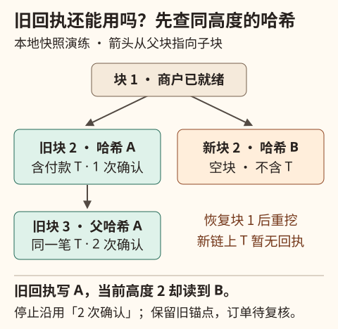

本页目录
选查原单，不催重付。编号能认出是哪一笔，不能证明已执行。收银员拿原编号再查交易本身：节点看得见这笔交易，但它还没有块号。两条记录合起来才支持「本节点已见，等入块」，既不能说商户收到了 0.003，也不能说这笔钱付丢了。
只改第二次查询：如果交易本身也查不到，回执仍为 null，还能告诉买家「正在排队」吗？不能。只能说「这个节点暂未查到」，核对网络和原编号后继续查。两种情况都不该请买家新付一笔。
只想读懂收银台该怎么答，可以翻到第 13 课：合约登记了一个数，钱就转过去了吗？。以下是选做的本地查款实验和卷末工单。动手前会用到三个判断：固定同一块再查余额、按原交易编号恢复查询，不另发一笔、分开实际来款和手续费。本课只查原生 ETH；商户程序在成功时保留全部来款。完整实验：receipts.py · 本地节点启动器：anvil_lab.py。
别把四个问题塞进一个布尔值
交易哈希标识一份签名交易；算出它不需要等人出块。请求 eth_sendTransaction 得到哈希，说明本次提交得到了节点的答复，不是全网的收货签名。回执是交易入块执行后的结果，带交易哈希、区块号、区块哈希、执行状态和用掉的 gas。回执里没有本订单应付金额，连原交易的 value 也要另查。像在 Java 服务里存异步任务的 ID：能查这个 ID，跟任务成功提交了哪一笔业务结果，是两个问题。
| 查问 | 看到的证据 | 可以怎样告诉客户 |
|---|---|---|
| 能正常查询吗？ | 连接被拒、超时，没收到有效 RPC 响应 | 「查询服务暂不可用；保留上次记录，请勿重复付款。」这不是 result: null，更不是 status=0 |
| 这笔是否待打包？ | RPC 正常；回执为 null，按哈希却能查到交易，尚无块哈希或块号 |
「本节点已见到，等入块。」如果连交易也查不到，只能说「本节点暂未查到」；输入哈希、链、节点视图都要核，可能未传播，也可能已被替换 |
| 是否执行成功？ | 非空回执的 blockHash 仍是该高度当前链上的块；status 为 0x0 或 0x1 |
0x0：「已入块，执行失败，款未到账，本次消耗了手续费。」0x1：「顶层执行成功，正在核对收款与确认条件。」不能用有无日志来猜 |
| 能否核销这张单？ | 核对链、交易双方、实际到账额、块锚点与订单门槛；如要求最终化，还要查最终化头 | 本地演练可以说「金额相符，达到两块门槛」；要求最终化的真实订单，则须等本交易所在块进入已最终化历史 |
还有一种情况：节点回了有效的 JSON-RPC error（例如参数无效、历史数据不可用）。查询没成功，但节点也不是失联；应保留错误类型，不可伪装成 null。订单「未找到」不是交易「确认失败」；一次新的查询失败也不抹掉上次得到的证据。区块浏览器能帮你定位哈希和高度，但索引器会延迟，可能选错链，也看不到你的独立应收单。点开浏览器是核验的起点，不是裁判的印章。
把时间停在提交和打包之间
环境：Python 3.11 标准库、Foundry Anvil 1.7.1、系统 lsof；macOS 或有这些工具的 Linux/WSL2。工具安装见第 04 课。从仓库根目录运行；anvil 在 PATH 中，或将环境变量 ANVIL 指向其可执行文件。脚本自行启停 127.0.0.1:18552 上的新内存链，链 ID 31337、Cancun 规则、两个临时账户各 10 测试 ETH，不连接公网。不要另启同端口的节点，也不要输入钱包密钥。
python3 labs/receipts.py
- 先把商户身份与订单分开登记。 脚本先用
evm_setAutomine(false)关闭自动出块。第二个临时账户发起部署，再用evm_mine手动出第 1 块。新商户地址的程序只做一件事：输入数据为空则停止并保留款，非空则执行REVERT，撤销本次价值转移。eth_getCode在块 1 确认商户地址有预期程序。第一个账户才是付款方，它没有付部署费。BEFORE固定在块 1，记录付款方余额、商户余额与付款方 nonce。订单独立写明应收3000000000000000 wei。 - 保留真空档，不用轮询撞运气。 保持手动出块。先查从未提交的全零哈希作为对照：回执和交易都为
null。再发一笔nonce=0的付款。此时eth_getTransactionByHash(T)已返回含该 nonce 的交易，仍没有块位置，eth_getTransactionReceipt(T)为null。这是两次不同查询；单看两个空回执分不出「节点已见」与「暂未查到」。 - 手动出一块，核对回执指的是不是眼前的块。
evm_mine后，从RECEIPT抄出交易哈希 T、收录高度 2 和块哈希 A。现在反过来，用高度 2 查当前块，比较它的哈希（DEPTH.canonicalHash）与 A，再看块内交易列表是不是[T]。高度像页码，哈希认的是具体那一页：只按 A 查询，即使找到了旧页，也不能证明节点今天仍把它列作第 2 页。如果哈希不符，停下重新查 T，不给旧回执增加确认数。如果相符，再按 T 核对from/to/nonce/value/input，确认这就是订单里那次尝试。 - 查余额并数确认。 此处块 2 的父块是块 1，块 2 只有这一笔交易。分别读取两端块后状态，
付款方减少额 = 商户增加额 + gasUsed × effectiveGasPrice，发送 nonce 增 1。再挖一个空块，核对块 3 的parentHash是刚才的块 2。按本工单约定，把收录块本身算作第一次：确认数 = 当前头高度 − 收录高度 + 1，所以从2−2+1=1到3−2+1=2。先确认在同一条链上，再做减法。 - 让读取真的失败。 退出
with anvil(...)后，子进程已停止。程序用同一客户端、同一哈希再读回执，这次捕获的是传输异常，没有拿到 JSON 回执。只输出lastKnown与freshObservation=no，不发送第二笔付款。实验还故意销毁了内存账本；重启是新链，不是把这笔订单找回来的办法。
下面是正常轮的预期字段节选，省略了真实运行才知道的地址、哈希与单价。T 是同一笔订单交易，A 是收录它的同一个块哈希；不要把字母当作可查询值。READY_LOCAL 是本地演练的两块门槛，不是最终化。
UNSEEN control=<全零哈希> receipt=null transaction=null
PENDING tx=T nonce=0 receipt=null block=none
RECEIPT tx=T … valueWei=3000000000000000 input=0x status=1 height=2 block=A …
DEPTH height=2 canonicalHash=A head=2 … confirmations=1 orderState=HOLD_DEPTH
DEPTH height=2 canonicalHash=A head=3 … confirmations=2 orderState=READY_LOCAL
RPC_UNAVAILABLE tx=T … lastKnown=READY_LOCAL freshObservation=no resend=no
例如只作算术示意：若回执给 gasUsed=21019 gas、effectiveGasPrice=1500000000 wei/gas，实付便是 31528500000000 wei，对这张成功单，付款方应少 3031528500000000 wei。用你自己的回执单价、用量和 BEFORE/AFTER 实值验证，不用上述单价填空。并发收支时，账户跨块净差不能独自归因于某笔交易；本实验专门隔离了付款块，而且商户不再向外转款。
只改一个字节：失败的交易为什么也有确认数？
python3 labs/receipts.py --reject
这次只改订单交易的输入：0x 变成 0x01，value 与应付金额不变。商户程序看的是输入数据长度，不是检查 ETH 够不够。在程序里，INIT 把 12 字节运行时代码装入测试地址；其中的条件跳转把空数据引向 STOP，另一条路执行 REVERT(0, 0)。故意给足 gas=50000 并发送真实交易，不用估算失败来冒充失败回执。
预期仍有 PENDING，仍在块 2 找到 T，仍有 1 次、2 次确认，差别是 status=0、AFTER.shopWei − BEFORE.shopWei = 0，付款方少掉的只有实付费，nonce 仍从 0 到 1。两次 DEPTH 都应是 HOLD_REVERTED。协议撤销的是本次顶层执行的价值转移与合约状态，不是让已入块的交易、已用 gas 或已消耗的发送序号消失。status=0 本身不提供故障原因；我们能说本例是主动 REVERT，是因为知道测试代码和输入。真实系统还须区分如耗尽 gas 等原因，不要看到 0 就编造一条报错文案。
昨天的块 2，不一定是今天的块 2


链重组指节点改认另一支历史。交易可能掉回待打包、从本节点消失，或已经进入新支的另一块；第三种情况下，即便哈希 T 不变，块位置、执行前状态和确认数也要重新取。实际处置是保留旧的 (chain, T, h, blockHash) 记录，暂停依赖旧证据的核销，按原哈希重查新回执与订单；无回执时再查交易。撤销旧的暂记状态用同一订单键做补偿，若已发货就转异常工单，不能假装撤下链上明细就能收回货物。
从确认到最终化，还差什么？ 以太坊 PoS 中，执行客户端验证交易和状态变化，共识客户端依据验证者投票选择当前头，并传递安全头和最终化头。latest 可以换支；safe 是共识层给出的较安全头，不等于 finalized。检查点得到足够权益（至少三分之二）投票并满足最终化规则后，其历史前缀才获得协议最终性。不是「过两块」或「过了某个固定分钟数」就变成最终化；投票不足时最终化可以停滞而链头继续增长。
如果交付策略要求 finalized，在同一受信、同步且网络身份正确的节点上查 eth_getBlockByNumber("finalized", false)。最终化头低于 h 就等；达到或超过 h，还要确认收录哈希是该头的祖先（同高度则哈希应相同；必要时沿 parentHash 核到 h），再核业务结果。断线、节点未同步、标签不支持时标「最终性未知」，不要回落为 latest 就放行。这里的 Anvil 没有真实验证者投票；即便开发节点能返回同名标签，也不作为实测 PoS 最终性的证据。浏览器若写「Finalized」，仍要核对它说的是哪条链、哪一块。
本课作业：交回一张被撤销的暂记凭证
先在纸上判断：若在满两次确认后把本地节点恢复到部署块并挖一个空块，旧收据的 status=1 字样还在你的日志里。客户现在能凭它提货吗？从根目录运行：
python3 labs/receipts.py --order-id R-12B --replace-block
这里用的是 Anvil 管理方法 evm_snapshot / evm_revert，人为构造旧块被另一块代替，不是让公网验证者发生重组。保留本轮 RECEIPT、两行 DEPTH、RESTORED、ROLLBACK、RPC_UNAVAILABLE。答案判据：旧块 2 的哈希曾与回执相符；恢复后块 2 的新哈希与旧哈希不同，交易列表为空，旧 T 的回执变成 null；RESTORED 的付款方余额、商户余额与 nonce 均等于部署块的 BEFORE。因此从 READY_LOCAL 退到 HOLD_RECHECK；随后 RPC 断开只是不能更新，不是又一场回滚。请用一句客户听得懂的话分别解释「合约执行回滚」和「收录块不在当前链」：前者交易仍在账上、花了费；后者是这张旧回执已无有效锚点，两者不能共用一个“支付失败”。
卷末工单 E-312：两次确认之后，谁来核这 1 wei？
商户订单要求精确收取 9,007,199,254,740,993 wei，本地策略要求两次确认。报表用浮点数显示「金额相同」；客服递来一笔成功交易，要求放货。先取少付现场，再以同一采购要求做独立足额对照。两轮是在不同的临时链，不能从第二轮的付款给第一轮补差，也不能从第一轮的 nonce 推断第二轮的哈希。学员交付的是两张核验单和交接意见，不是真的发货。
从仓库根目录在 Bash 中执行。tee 保存的只是本地实验的公开摘要；两次相同的 id 用于对照输入，不代表在线上允许一个订单重复付款。
set -o pipefail
python3 labs/receipts.py --order-id E-312 --order-wei 9007199254740993 --short-pay | tee e312-short.log
python3 labs/receipts.py --order-id E-312 --order-wei 9007199254740993 | tee e312-full.log
用 第 11 课的 Java 整数思路独立复算，不拿程序打印的 feeWei 当输入。准备 JDK 17 或 21 的 jshell，仍在这两个日志所在的目录运行：
jshell -s - <<'JAVA'
import java.math.BigInteger;
import java.nio.file.*;
import java.util.*;
BigInteger field(List<String> rows, String tag, String key) { String line = rows.stream().filter(s -> s.startsWith(tag + " ")).findFirst().orElseThrow(); String p = key + "="; return Arrays.stream(line.split(" ")).filter(s -> s.startsWith(p)).map(s -> new BigInteger(s.substring(p.length()))).findFirst().orElseThrow(); }
for (String file : List.of("e312-short.log", "e312-full.log")) {
var r = Files.readAllLines(Path.of(file));
var fee = field(r,"RECEIPT","gasUsed").multiply(field(r,"RECEIPT","priceWeiPerGas"));
var debit = field(r,"BEFORE","payerWei").subtract(field(r,"AFTER","payerWei"));
var credit = field(r,"AFTER","shopWei").subtract(field(r,"BEFORE","shopWei"));
var shortage = field(r,"ORDER","orderWei").subtract(credit);
System.out.println(file + " feeWei=" + fee + " balanced=" + debit.equals(credit.add(fee)) + " shortageWei=" + shortage);
}
/exit
JAVA
| 交接栏 | 本单的验收判据 |
|---|---|
| 身份与账户 | 每轮独立记 ORDER.id/chain/payer/shop/orderWei；从 BEFORE、AFTER 抄高度、块哈希、两端余额与发送 nonce。商户有本轮已核过的程序代码，不能用任意一个测试账户的余额替代。留证用完整哈希，不只留末四位 |
| 交易与序号 | 把 PENDING.tx/nonce 接到同轮的 RECEIPT.tx/from/to/nonce/valueWei/input。两张证据都应是原付款方的 nonce 0，入块后该方 nonce 1。RPC 不可用时只重查；记清订单键和待复查的原哈希，不分配 nonce 1 再发一遍 |
| 钱与费用 | 两个 balanced 都为 true，表示钱守恒；少付轮 credit=9007199254740992、shortageWei=1，足额轮 credit=9007199254740993、shortageWei=0。两者 status=1 但只有后者付清。2⁵³+1 不能由二进制 double 精确表示，不能用浮点近似或显示精度裁单 |
| 所在链与门槛 | 同轮 RECEIPT.block 必须等于两行 DEPTH.canonicalHash；高度从 2 数到头 3 得两次确认。少付轮两次都 HOLD_AMOUNT，足额轮依次 HOLD_DEPTH、READY_LOCAL。这两次运行都没有主网最终化证明 |
| 下一班做什么 | 交给客服两句可直接使用的意见：「第一笔执行成功，确认两次，仍少 1 wei，暂不核销并按订单差额流程处理」；「足额对照在本地达门槛。查询服务断开后保持上次记录，无新证据，不要求二次付款」。若客户改要协议最终化，两张凭证都不放行 |
独立复核：请接班人选一个不同的整数金额（2 wei 到 1 测试 ETH 之间），先不看节点，预判少付 1 wei 后的收款、发送 nonce 和处置。替换两条命令中的 --order-wei，给新工单单独保留日志，再用同一方法比对；能解释为什么 balanced=true 不足以核销才算过关。交接只留临时地址、交易及块哈希、金额和状态，不交密钥、助记词、签名原文或客户信息。
查证原文
- Ethereum Execution APIs：按哈希查交易、查回执 与区块查询和 block tag：区分未找到、查询错误与已有回执。
- EIP-658：回执中的顶层执行状态；EIP-1898：用块哈希取得一致的状态视图。本实验停住出块后按高度读；对会移动的节点不能假设连续两次
latest就是同一状态。 - 以太坊 PoS：Gasper 的分叉选择与检查点最终化；Anvil 1.7.1 的本地 RPC 实现。快照与手动出块是控制实验时间的工具，不是以太坊共识接口。